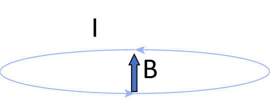
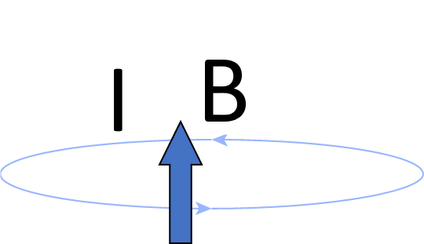
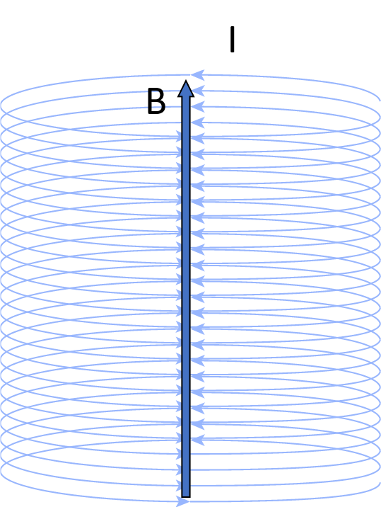
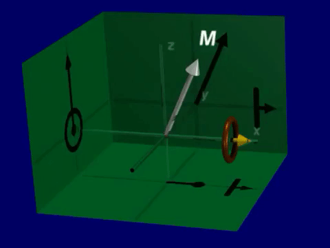
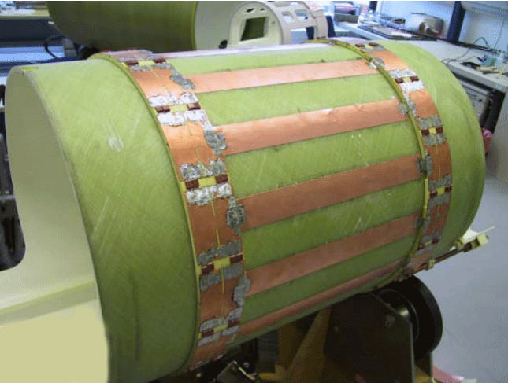
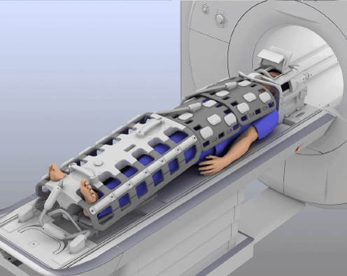
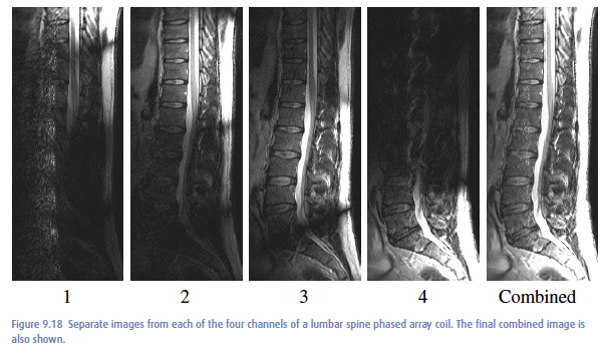

Magnetic fields in MRI#
The magnetic fields created and manipulated during a MRI experiment critically determine the entire MRI experiment. We will provide some background on creating and detecting magnetic fields, and then describe the magnetic fields present in MRI systems.
Learning Goals#
Describe the 4 fundmanetal components of a MRI scan and why they are necessary
Define the magnetic fields created by various components
Describe the purpose of each magnetic field created
Understand what MRI is measuring
Describe how RF coils receive MRI signal
Summary of Magnetic Fields#
Each of the main components of a MRI system creates magnetic fields, but with different orientations, magnitudes, and frequencies, which are summarized in the following table
Component |
Notation |
Direction |
Frequency |
Strength |
Purpose |
|---|---|---|---|---|---|
Main Field |
\(B_0\) |
\(z\) |
0 Hz |
\(\approx 1\) T |
Polarization |
Main Field Inhomogeneities |
\(\Delta B_0(\vec{r})\) |
\(z\) |
0 Hz |
\(\approx 1-10\) ppm |
- |
Magnetic Field Gradients |
\(\vec G(t)\) |
\(z\) |
\(\approx 1\) kHz |
\(\approx 10\) mT |
Spatial Encoding |
Transmit RF Coils |
\(B_1^+(\vec{r},t)\) |
\(x,y\) |
\(\approx 100\) MHz |
\(\approx 10 \mu T\) |
Excitation |
Receive RF Coils |
\(B_1^-(\vec{r},t)\) |
\(x,y\) |
\(\approx 100\) MHz |
\(\approx 1 \mu T\) |
Reception |
Net Magnetization |
\(\vec{M}(\vec{r},t)\) |
\(z,y,z\) |
\(\approx 100\) MHz |
\(\approx 1 \mu \mathrm{T}\) |
Signal Source |
Also included is the Net Magnetization, \(\vec{M}(\vec{r},t)\), which is the magnetic fields created from nuclear spins that we measure in MRI.
Loop currents and magnetic fields#
Magnetic fields, \(\vec{B}\), can be created by current, \(I\), through loop of wire, governed by the principles of electromagnetism in Maxwell’s equations. The the “left-hand rule” determines the direction of the magnetic field.

By increasing the current, the magnetic field is increased

We can also link many loops together (a “solenoid”) to increase the extent of the magnetic field.

A solenoid design is typically used to create the main magnetic field for MRI, \(B_0\), to create a large region in space with a homogeneous magnetic field, as required for MRI across a volume.
Main Magnet - \(B_0\)#
The main magnetic field is created with solenoid coils, shown above, that can provide a large region in space where there is large, homogeneous magnetic field.
The large magnetic field is required to create stronger polarization.
The large region is space determines where we can create an image.
And having a homogeneous magnet ensures there are no image distortion artifacts.
This magnet creates magnetic fields of usually 1.5 or 3 T, by convention oriented in the z-direction, and this field is always on during the scan. Mathematically, we can add this to our magnetic field vector:
(Note that this magnetic field is never perfect, and this is captured by the main field inhomogeneities, \(\Delta B_0(\vec r)\) in the table above, we’ll add that in later.)
Magnetic field gradient coils - \(\vec{G}(t)\)#
The magnetic field gradient coils are designed to add and subtract from the main magnetic field. In this way, they create a spatially varying magnetic field. Since the frequency of magnetic resonance is proportional to the magnetic field, this means that when the gradients are on the resonance frequency varies as function of position. This gives us a way to separate signals from different regions based on resonance frequency, and create images.
The gradient coil fields have a maximum amplitude of around 50 mT/m = 0.05 T/m, aligned with \(B_0\) in the z-direction, and this field is switched on and off during MRI experiments. The gradients are typically varied every few ms, with minimum switching times around 0.1 ms. Mathematically, we can add this to our magnetic field vector:
Where the gradients creates linear changes in the z-component of the magnetic field, \(B_Z\), across space.
Radiofrequency (RF) coils - \(B_1^+(\vec{r},t), B_1^-(\vec{r},t)\)#
The purpose of the RF coils and RF systems are
Excitation – perturb the net magnetization from equilibrium by creating magnetic fields at the resonance frequency
Reception – after excitation, the precessing net magnetization creates magnetic fields at the resonance frequency
These are called RF coils since the resonance frequencies for MRI, typically around 100 MHz, is in the so-called radio-frequency (RF) range. Their amplitude is much smaller than the other magnetic fields, typically in the 10 \(\mu\)T = .00001 T range. The magnetic fields created by the RF coils are oriented perpedicularly to the main magnetic field, and thus are in the transverse (XY) plane. Mathematically, we add this final magnetic field as
Note that the sin/cos in the magnetic field represent a rotation of the RF field at the Larmor frequency, \(f_0 = \bar{\gamma} B_0\).
The RF system is divided up into transmit and receive paths. All components are tuned to Larmor frequency, meaning they are most sensitive to transmitting or receiving signals at this frequency. Reactive components (capacitors and inductors) are used for tuning to the correct frequency.
Transmit (Tx) system for excitation - \(B_1^+(\vec{r},t)\)#
Transmit high power (10s of kW) RF signals
Key requirement is homogeneity, i.e. same magnetic field that creates the same flip angle across imaging FOV
Usually a single larger, coil surrounding entire FOV
Receive (Rx) system for reception - \(B_1^-(\vec{r},t)\)#
Receive small signals (mV) arising from body
Key requirement is high sensitivity to detect small signals with the least noise
Usually an array of smaller coil elements (also known as channels), placed around the body
Creating Transmit RF fields#
To create transmit RF fields, we simply put an oscillating electric current into a loop of wire, which is simulated below. When this is performed at the Larmor frequency, this creates RF excitation.
import numpy as np
import matplotlib.pyplot as plt
R = 0.1 # coil radius [m]
I0 = 0.1 # current amplitude [amps]
mu0 = 4 * np.pi * 1e-7 # T⋅m/A
t = np.linspace(0, 4, 401)
I = np.cos(2 * np.pi * t) * I0
BZ = mu0 * I / (2 * R) # magnetic field at the center of a single loop
plt.subplot(211)
plt.plot(t, I)
plt.ylabel('I (A)')
plt.xlabel('time')
plt.title(f'Current in a single loop coil of radius {R} [m]')
plt.subplot(212)
plt.plot(t, BZ)
plt.ylabel('$B_Z$ (T)')
plt.xlabel('time')
plt.title('Magnetic field at center of the coil')
plt.tight_layout()
plt.show()
Receiving Magnetic Resonance Signal#
Magnetic resonsance signal is received by the following sequence of events
Spins and the net magnetization, \(\vec{M}\), in a magnetic field will precess at the Larmor frequency, which depends on the gyromagnetic ratio and main magnetic field: \(f_0 = \bar{\gamma} B_0\)
This precession creates oscillating magnetic fields at this same (Larmor) frequency.
Oscillating magnetic fields will create oscillating current in loops of wire, which can be detected by amplifying and digitizing this signal

Reciprocity#
The principle of reciprocity in electromagnetism tells us that the same relationships govern creating magnetic fields from oscillating currents and creating electric currents from oscillating magnetic fields. So far we have discussed that an oscillating current in a loop of wire will create an oscillating magnetic field, which describes the transmit RF process. So, reciprocity says that an oscillating magnetic field will create a current in a loop of wire. This describe the receive RF process, as shown above.
RF Coils#
Transmit (Tx) RF coils#
Typically performed with “BODY” coil
Birdcage design
Provides homogeneous magnetic field amplitude
Creates magnetic fields perpendicular to B0
In MRI we denote transmitted magnetic fields from RF energy as
This field is typically in units of millitesla (mT) and can vary over space, \(\vec{r}\) and time, \(t\)

Receive (Rx) RF coils#
Tailored to the anatomy of interest, e.g. knee coils, abdomen coils, head coils
Configured in arrays (or “phased arrays”)
Between 8 to 64 individual coil elements (also known as channels) in a array coil is common
Elements should be relatively isolated and decoupled to not interfere with each other
Tuned to the Larmor frequency when receiving signals
Detuned (turned off) when transmit RF is active so they don’t interfere
Goal is to provide high sensitivity to receive MR signals by placing them as close as possible to the body
In MRI we denote senitivity profile to varying magnetic fields of the RF receiver coils as
This sensitivity is typically in units of millitesla/Amp (mT/A) and can vary over space, \(\vec{r}\), time, \(t\), and coil element, \(n\), in the array coil.

RF Coil Profiles#
Receive elements#
Coil elements are most sensitive to signals originating near the element, and the so-called sensitivity off as we move away from the coil. The following images show that each element is most sensitive, or has the brightest image, closest to that element:

Sensitivity Simulation#
The following simulates the sensitivity profile of a single loop RF coil varying over space, using the Biot-Savart law from electromagnetism. In the following plots, the magnetic field vector, \(\vec{B}(\vec{r}) = [B_X(\vec{r}), B_Y(\vec{r}), B_Z(\vec{r})]\), that is created by the coil is plotted, as well as the magnetic field amplitude, \(\|\vec{B}(\vec{r})\|\).
import numpy as np
import sys
sys.path.append('../Physics/')
# Import the script as a module
from loop_coil_field import loop_coil_field
R = 12 # coil radius, cm
I = 3 # current in the coil
flag_2d = 1 # just plot 2D profile
BX, BY, BZ, xp, yp, zp = loop_coil_field(R, I, flag_2d)
import matplotlib.pyplot as plt
skip_index = 2 # skip every 2nd point for plotting
plt.quiver(xp[::skip_index], yp[::skip_index], BX[::skip_index, ::skip_index, 0], BY[::skip_index, ::skip_index, 0], scale=4)
plt.axis([-18, 18, -18, 18])
plt.xlabel('x position (cm)')
plt.ylabel('y position (cm)')
plt.title('Magnetic field as a vector field')
plt.show()
import numpy as np
import matplotlib.pyplot as plt
Bmag = np.sqrt(BX**2 + BY**2 + BZ**2)
xhalf = round(len(xp) / 2)
plt.imshow(Bmag[:xhalf, :], extent=[yp.min(), yp.max(), xp[:xhalf].max(), xp[:xhalf].min()], aspect='auto', cmap='gray')
plt.xlabel('position (cm)')
plt.ylabel('position (cm)')
plt.axis('tight')
plt.colorbar(label='Magnetic Field Magnitude')
plt.title('One-sided $B_1$ sensitivity profile (coil located at bottom of the image)')
plt.show()